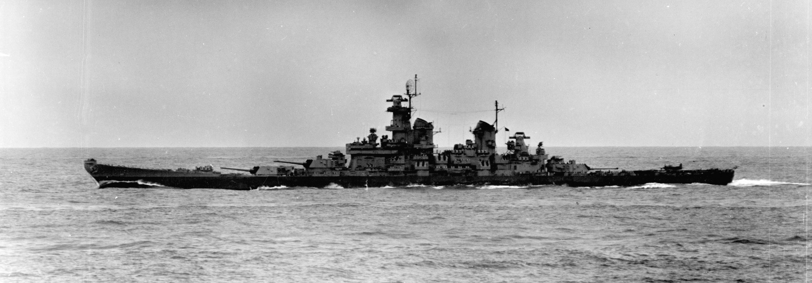
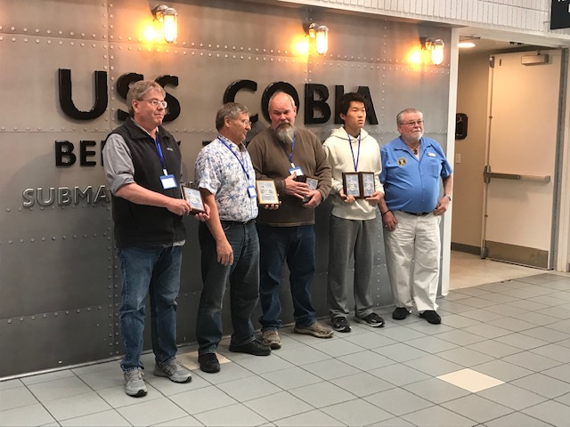
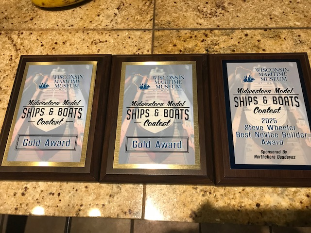

USS Missouri BB-63

Built from Tamiya's 1/700 Missouri kit, this model includes aftermarket metal photo-etched parts, gun barrels, and a wooden deck.
Build Process
- The hull and deck are first bonded with plastic cement, and the hull is masked and brush painted with Measure 22 camouflage.
- The superstructure parts are bonded together and detailed photo-etching is super glued on. The entirety of the superstructure is then acrylic brush painted with haze gray according to her historical camouflage scheme.
- After the superstructure is attached and painted, the wooden deck is first painted blue and then adhered on. Fine parts such as cannons, anti-aircraft weaponry, and photo-etched stairs/railings are attached and painted as well.
- The entire ship is then sprayed with a clear protective coating, and weathering is applied using oil paint and acrylic wash. After a final coat of clear spray, ultra-fine wires are used for rigging and flags are glued on. As a final touch, regular Elmer's glue is brushed onto some parts of the deck for a wet, glossy look to mimic a wet deck from waves.
- The ocean base is first made from a block of foam. A layer of air-dry clay is then applied on top to create the wave shapes. This layer is sealed with epoxy and painted, with different colors and textures of the waves applied. Finally, another coat of epoxy is applied and the foaming wave crests are made using cotton from cotton balls.
All in all, the entire build process from assembling the hull to making the ocean base took around 7 months, working a few hours a day for a few days per week.
Historical Background about USS Missouri BB-63

- One of the most famous warships ever, USS Missouri (BB-63) “Mighty Mo” was an Iowa-class battleship, commissioned on June 11, 1944, during World War II.
- Armed with nine 16-inch/50 caliber main guns, twenty 5-inch/38 caliber secondary guns, and numerous anti-aircraft weapons, she was one of the most powerful warships built.
- Fought in the Pacific Theater, bombarding Iwo Jima, Okinawa, and the Japanese mainland. She served as Admiral Halsey’s flagship in 1945.
- On September 2, 1945, the Japanese Instrument of Surrender was signed on its deck in Tokyo Bay, officially ending World War II.
- Provided naval gunfire support for U.N. forces during the Korean War. Deactivated in 1955.
- Reactivated in the 1980s with Tomahawk missiles and electronics, participating in Operation Desert Storm (1991).
- She is now a museum ship at Pearl Harbor, Hawaii, docked near the USS Arizona Memorial.
USS Atlanta CL-51

Built from Tamiya's 1/700 Missouri kit, this model includes aftermarket metal photo-etched parts, gun barrels, and a wooden deck.
Build Process
- Built from the Very Fire 1/350 USS Atlanta Deluxe kit. This includes the plastic hull, sprues, photo etched parts, and brass gun barrels.
- The hull parts are first adhered together using standard plastic cement. Each individual superstructure section, such as the bridge and funnels, are also bonded with plastic cement separately.
- The photo etched parts such as porthole rims and railings are then adhered with super glue (CA glue).
- After the major parts are assembled, painting can begin. The entire model is brush painted with acrylic paint. She is painted in her late 1942 camouflage, a modified measure 12 scheme. The hull is first masked and painted, followed by the deck. The superstructure camouflage pattern is meticulously brushed on by eye.
- After all superstructure parts are painted, they are bonded to the hull. The remaining fine parts such as anti-aircraft guns, binoculars, range finders, etc. are then assembled, painted, and attached to the ship.
- Finally, the masts are painted and glued. The entire ship is then sprayed with a clear coating in preparation for weathering, which is done using oil paint and acrylic wash, and rigging. The entire ship is coated in clear coating again for a final time, and the flags are glued on.
Overall, the entire build process took about 6 months, working a few days per week for a couple of hours.
Historical Background about USS Atlanta CL-51

- USS Atlanta (CL-51) was the lead ship of the Atlanta-class light cruisers, commissioned on December 24, 1941, just weeks after the attack on Pearl Harbor.
- Designed as an anti-aircraft cruiser, she featured 16 × 5-inch/38 caliber guns in dual-purpose mounts.
- Initially deployed in the Atlantic, she was quickly transferred to the Pacific, escorting carriers and providing fire support during early WWII operations.
- Battle of Midway (1942): Served as part of the screen for USS Enterprise and USS Hornet, though it did not engage directly in the battle.
- Played a key role in the Battle of Guadalcanal (November 1942), engaging Japanese forces in intense night combat. On November 13, 1942, after taking heavy fire from Japanese ships and accidental friendly fire, the Atlanta was scuttled due to irreparable damage.
- Earned five battle stars for her World War II service and a Presidential Unit Citation for her "heroic example of invincible fighting spirit" during the battle of Guadalcanal.
Model Ship Building Competitions
Participated in Wisconsin Maritime Museum model ship building competitions, showcasing craftsmanship and historical accuracy.


Highlights
- Mastered scale model construction techniques including plastic cement bonding and photo-etching assembly
- Applied authentic historical camouflage schemes and military paint patterns with precision brushwork
- Developed advanced weathering and finishing skills using oils, acrylics, and clear protective coatings
- Created detailed ocean bases with realistic wave effects using foam, clay, epoxy, and cotton materials